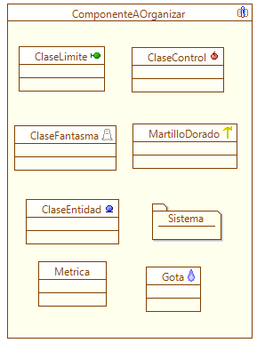
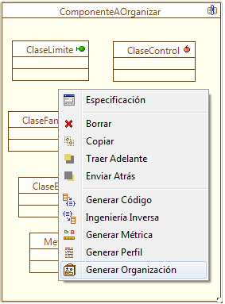
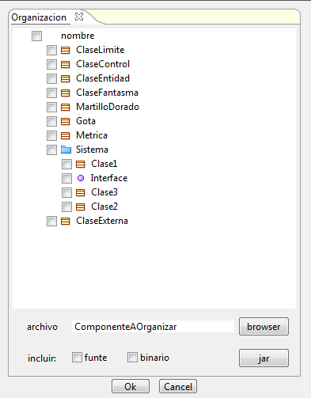
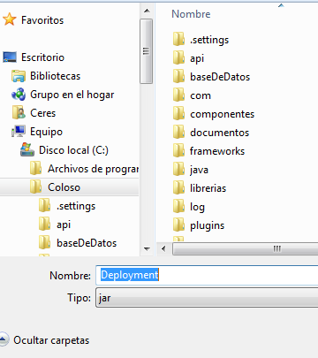
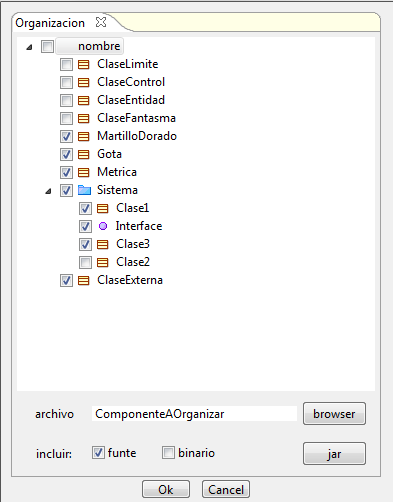

|
Componente Organizador |
|
El Organizador es un componente lógico que permite a Coloso
empaquetar una serie de clases agrupadas bajo un componente dentro de
un archivo JAR . El componente Organizador se puede invocar desde
el diagrama de componentes. Para invocarlo es necesario tener un
componente disponible y algunas clases relacionadas dentro de este para
empaquetar en el JAR.
 Figura 1. Elementos a organizar Se selecciona el componente y se da clic derecho sobre este, luego se selecciona Generar Organización, como se muestra en la Figura 2.  Figura 2. Accediendo al componente Organizador Se muestra la ventana del organizador, en esta se pueden seleccionar las clases e interfaces que serán colocadas en el componente JAR, como se muestra en la Figura 3.  Figura 3. Interfaz del Componente Organizador La Figura 4 muestra como se selecciona el lugar donde se desea generar el JAR y el nombre del mismo.  Figura 4. Eligiendo el destino del JAR Se seleccionan las clases que deberían ir en el paquete, adicionalmente se puede escoger si se colocan archivos fuentes y/o binarios de la misma, tal como se muestra en el ejemplo de la Figura 5. Se da Ok y el paquete JAR con las clases seleccionadas será creado en la ubicación especificada.  Figura 5. Escogiendo los elementos a organizar |